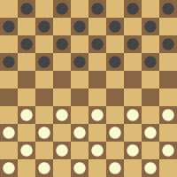

Rules: International checkers
Starting position
The game is played an a 10×10 board chess-like board. The bottom left tiles must be dark just like in chess.
Each player starts with 20 pieces, all on dark squares, with two rows empty in the middle.

Starting position in checkers
Moves and captures
The player with the light pieces moves first. Then turns alternate.
Ordinary pieces move one square diagonally forward to an unoccupied square.
Capturing can be done by jump over a piece, moving two squares forward or backward. The move with the most captures
must
be made.
If, after capturing, the piece lands on a tile where it can capture it, must.
The captured pieces are only removed after the move.
Crowning
Crowning happens when a piece reaches the far side of the board. In this case the piece is turned into a
king
.
Kings can move any number of squares backward or forward.
Winning and draws
If a player cannot make a legal move, loses. This can either be because they have no pieces left or because they are obstructed.
The game is a draw if neither of the player can win:
A king-versus-king endgame
The same position is repeated three times, with the same player having the move